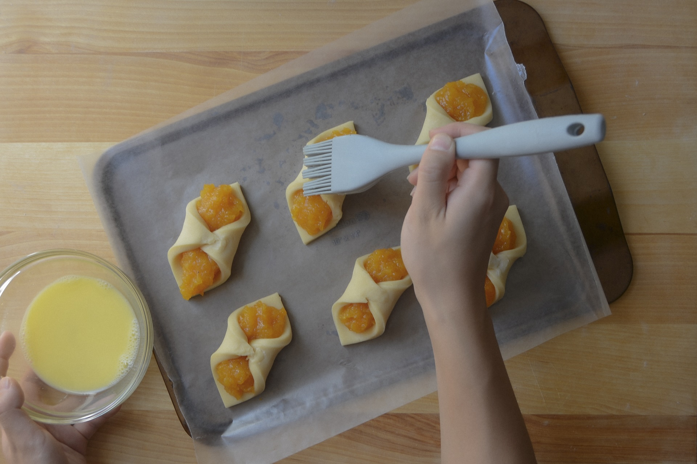
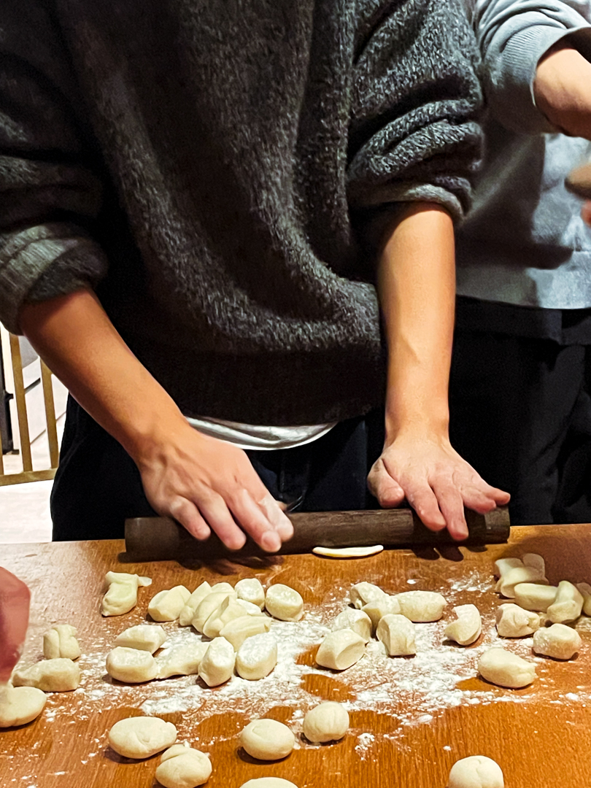
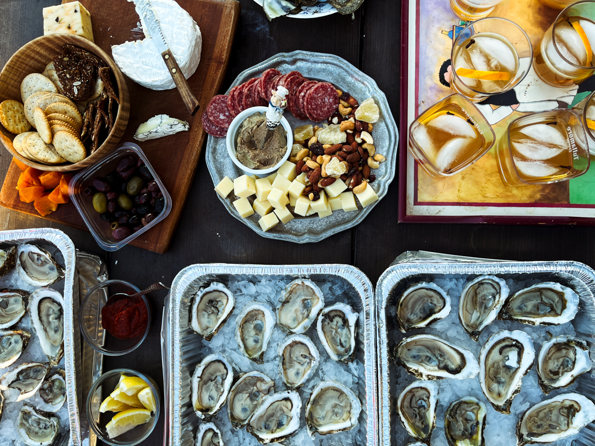
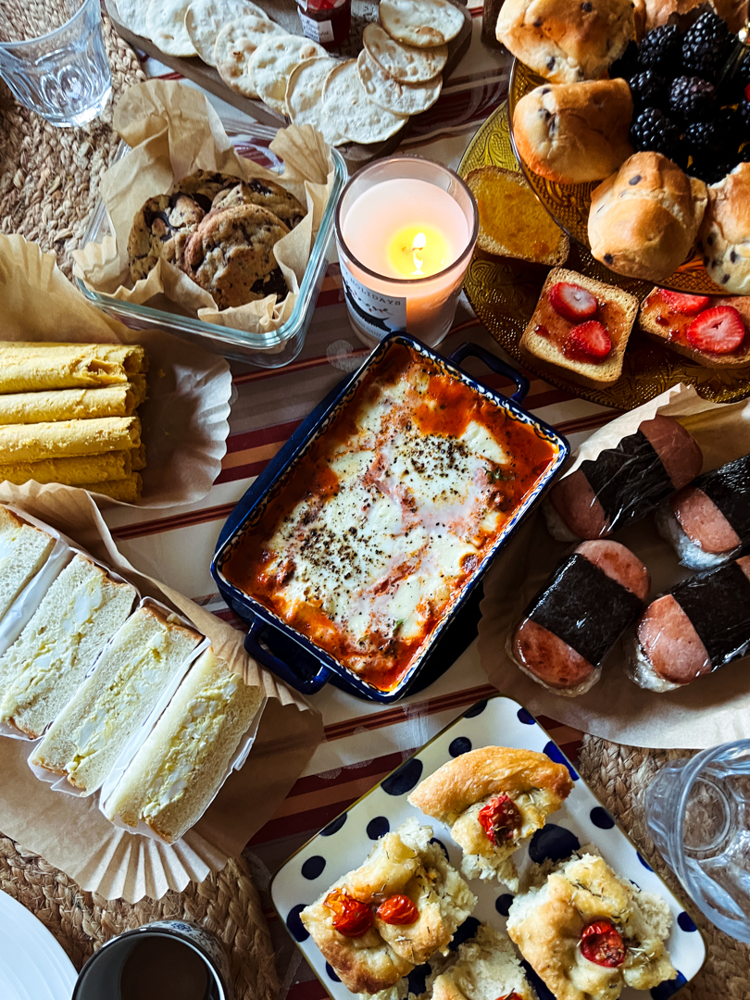
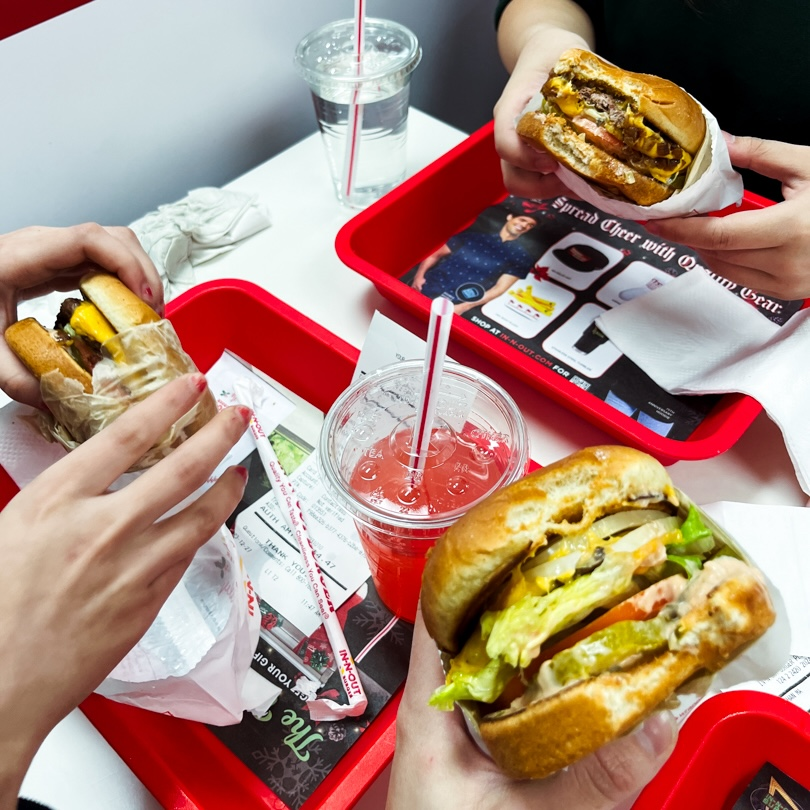

-
The Kitchen
One of my lifelong passions is food. Maybe not Anton Ego level passions, but I like to eat and cook and think about how our relationships with food relate to literally every other aspect of our identities.
-

5.20.24
I'm working on a long-term editorial project right now where I ask 15 people what their favorite dish is, and through a process of recreating that dish, continue the oral and culinary histories of their families. It's an incredibly radical act, in my opinion, to take something that's passed down to you and change it. To use your personal taste and knowledge of cooking to destroy and remake a dish for better or for worse. This project is about that process, and also about Joe's Crab Shack and Ina Garten and Trader Joe's Everything Bagel Seasoning. It's about mothers and grandmothers and eating and eating and eating.
-

2.10.24
I've done dumpling nights every Chinese New Year in college with friends. It's really special to escape the cold of Pittsburgh mid-February and eat semi-okay dumplings together. I learned how to make dumplings from my grandparents, and I'm glad that's something that I have from them that I'm proud of.
-

11.23.23
Spread at a gathering with my partner's family. I never liked oysters as a kid, but my partner's mother grew up in Jersey and raised him to like them. The raw oysters have grown on me a lot over the past years. Chinese people usually eat massive oysters that are poached or fried, which have a much harder time going down the hatch. I do like raw oysters quite a bit now, and am always on the lookout for a $1/oyster deal (shoutout Whole Foods' Friday deal), but I do wonder how much my liking oysters comes from a desire to fit in with his family.
-

12.24.23
Spread at a potluck with my close friends from high school. We all grew up with pretty ethnic relationships with food, so it's strange to see what we bring to the table when we gather to eat. Somehow, from two Chinese and one Indian potluckers, we created a spread with foccaccia, egg sandos, spam musubi, jam and crackers, and egg rolls. I wonder about why we don't bring anything our mothers would make for us.
-

12.27.23
I'm from California... I miss In-N-Out...